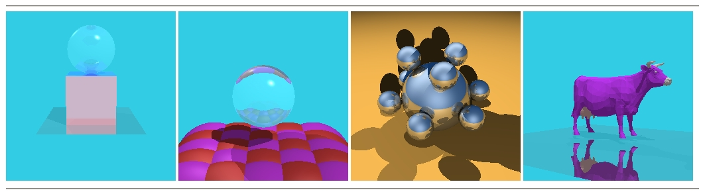
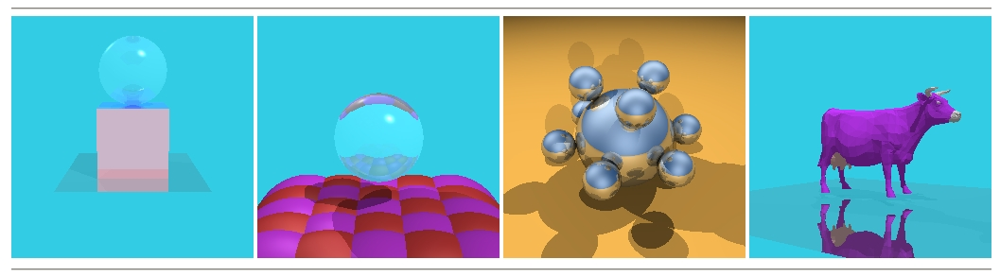
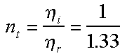
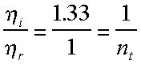
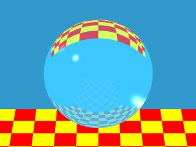

|
|
Ray Tracing
Project 4 in case you need it.
Objective
In this last project you are asked to make some extensions to the
ray tracer given in class. In particular, you should add refraction
to the illumination model, finish adding triangle meshes, and add
a cylinder and/or cone primitive. Ray Tracing is one of the easiest
ways of generating visually stunning pictures.

Hesky Fisher pointed out that the "break"
statement when checking for shadows in
Surface.java was a bit hasty; it should have been
a "continue", that is, we have found that the pixel is
shadowed relative to that light source, but we need to
keep looking at the other light sources. With that change,
we get the results below (note the change in the balls.ray
case. Also, you might run into numerical problems with
the balls.ray test case because of the "table"
sphere with the huge radius. In which case, reload the
test case (below) where we've reduced the radius and the
z-offset.

Checkpoint (Due Wednesday November 28 at 8pm)
Add refraction to the illumination model. Demonstrate it using the
sboard.ray test file. Here's a few things to keep in mind:
- The last two parameters of the surface model kt
and nt should be interpreted as follows; kt
is the fraction of the transmitted ray's intensity that is reflected
to the eye, nt is the ratio of the surrounding
material's index of refraction to the object's index of refraction.
For example, if you want to simulate a spherical water drop the
index of refraction for water is approximately 1.33 (glass is
approximately 1.5). If we assume the surrounding material is air
then its index of refraction is 1. So when a ray strikes the outside
of the object the term used in the equation given in class is
computed as follows.

And when a ray inside of an object exits it then the term used
in the equations is computed as follows.

- The Ray class should be extended to keep track of whether the
ray is entering or exiting the object at an intersection. This
info needs to be passed to the Surface shader so it knows whether
to use nt or its inverse. We assume that transparent
objects won't intersect and so transitions are always from air
or into air.
- Consider what happens when the ray starts inside of a sphere
(as it will in this project). Will the sphere intersection code
still work?
- Note that the raytracer as currently written will continue tracing
rays forever until one fails to run into something. What's going
to happen inside a transparent sphere? Or, if you put two mirrors
in front of each other? Maybe you should limit the depth of the
Ray tree to some fixed maximum depth, e.g. 10.
- You might want to speed up the shadow test, which currently
tests every object for each shadow ray, even after it has found
an intersection. Does it make a difference?
- What does a crystal ball look like?

Your mileage may vary...
Project5 (Due Wednesday December 5 at 8pm)
- Finish coding the Triangle intersect and Shade
methods in Triangle.java. Test the results with one of
the test cases involving polygon meshes, show us the cow test
case.
- Add your own primitive. For example, one of:
- cone tipX tipY tipZ baseX baseY baseZ baseRadius
- cylinder topX topY topZ baseX baseY baseZ Radius
Extra Credit
- Add more primitives, e.g. torus.
- Add texture mapping, e.g. create a Raster from an image and
map it onto the surface of a sphere.
- Add bump mapping.
- Incorporate bounding volumes or spatial subdivision
Files
The following files define the Ray Tracer:
- RayTrace.java This is the top-level
of the ray tracer.
- RayTraceApplet.java Code
for the applet that calls the ray tracer.
- Light.java The Light class.
- Surface.java The Surface class,
contains the critical Shade method. You need to add refraction
here.
- Ray.java The Ray class.
- Renderable.java The Renderable
interface.
- Sphere.java The Sphere class, check
the intersect method.
- Triangle.java The Triangle class,
complete the intersect and Shade methods.
- TriangleMesh.java The TriangleMesh
class.
- Vector3D.java The Vector3D class,
with methods for common vector operations.
- balls.ray Input file with reflective
spheres.
- sboard.ray Input file with transparent
sphere and a "checkerboard" made of spheres.
- cow.ray The purple cow on a reflective
surface.
- test.ray A small triangle mesh and a
transparent sphere. May be useful for debugging.
Ground Rules
- Feel free to discuss assignments and your approach with others.
- Don't use code from previous semesters.
- The design and code must be your own.
- Cite any models, images, ideas, or algorithms that you do not
develop yourself.
- The assignment and the checkpoint are due before 8pm of the
days indicated.
- A working version of your applet and source code must be linked
to your course home page.
- All source code must also be submitted via Athena's turnin procedure.
- Develop your projects in directories named project1, project2,
etc. (depending on the project number)
- Before turning in, put your project in a tar archive using
tar command on athena:
tar -cvf projectX.tar projectX
- here projectX.tar is the archive name, and projectX
is your project directory.
- X is the project number.
- make sure you are in the parent directory of projectX
- Use turnin command to turn in the tar file
turnin -c 6.837 X projectX.tar
Make sure you include the course number (-c 6.837) and the
project number (X).
- For example, to turn in project 5:
- make sure your project is in the directory named 'project4'
- go to the parent directory of project5
- type 'tar -cvf project5.tar project5' to create the
tar archive
- type 'turnin -c 6.837 5 project5.tar' to turn in the
archive
- Check this page frequently for updates and
clarifications.
|